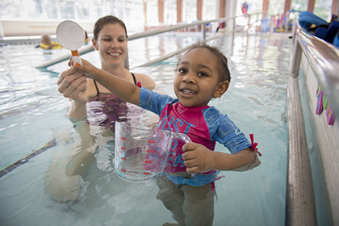
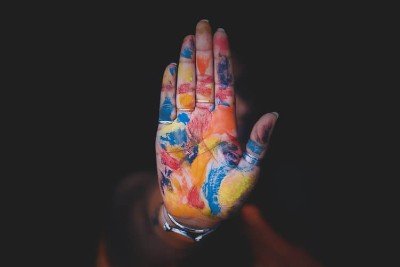
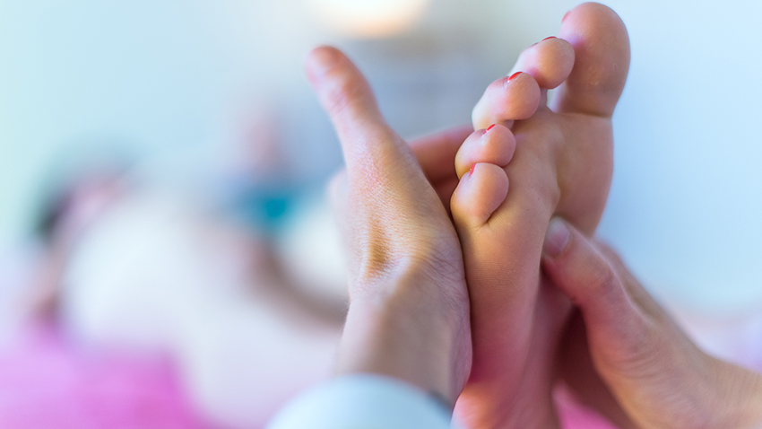
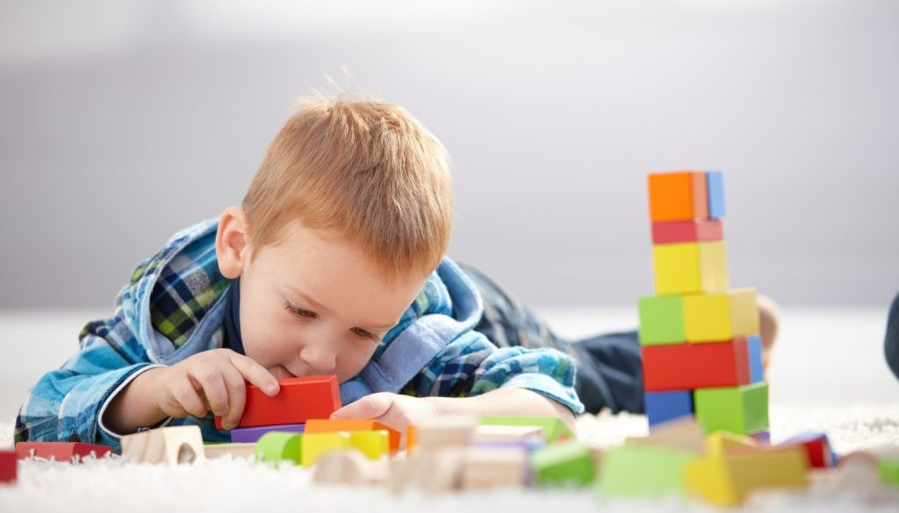
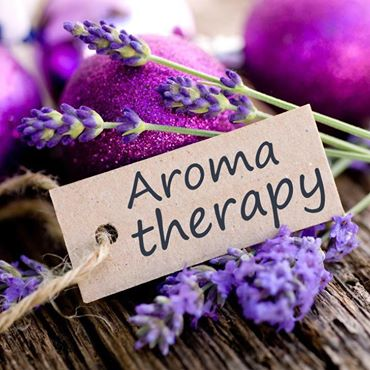
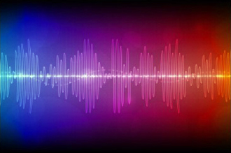

Our programs are tailor-made for each student because we believe that “One Size does not fit all”.
All therapies are designed in such a manner that they converge towards the Short Term and long term goals set up for the child.
We provide our students with various therapies such as (Click for further details)

Aquatic therapy refers to treatments and exercises performed in water for relaxation, fitness, physical rehabilitation, and other therapeutic benefit. Typically a qualified aquatic therapist gives constant attendance to a person receiving treatment in a heated therapy pool.
Aquatic therapy techniques include:
Ai Chi
Aqua Running
Halliwick, and other aquatic bodywork forms
Therapeutic applications include neurological disorders, spine pain, musculoskeletal pain, pediatric disabilities, and pressure ulcers.

Color therapy is an alternative therapy that uses colors and their frequencies to heal physical and emotional problems.
Color therapy is also known as chromopathy, chromotherapy, or color healing.
The goal of color therapy is to correct physiological and psychological imbalances. For instance, if you're stressed, color therapy can help soothe you so that you can regain your psychological balance.
If you're depressed, color therapy can be used to invigorate you and give you increased energy.

Acupressure is often called acupuncture without the needles. Instead of needles, acupressure involves the application of manual pressure (usually with the fingertips) to specific points on the body.
Most people try acupressure to manage symptoms of a condition, such as:
Cancer-related fatigue
Headache
Motion sickness
Muscle tension and pain
Nausea or vomiting after surgery or chemotherapy
Stress management

Gross motor skills include activities that use the larger muscles of the body of the arms, legs, and trunk
Adequate strength, coordination, and balance are needed to complete gross motor activities, which include things such as walking, running, climbing, jumping, and ball skills.
Gross motor skills are often acquired in a predictable sequence. For example, children typically progress from crawling to walking to running.
Fine Motor Skills are necessary to perform activities that involve manipulating items using the small muscles of the hands and fingers
Appropriate tone (muscle’s readiness to work), strength, coordination or dexterity, and feeling (sense of touch) is required to perform these tasks. If a child has difficulty with any or all of these skills, then completing fine motor tasks can be difficult.
Many fine motor tasks involve bilateral coordination, which involves using two hands together to complete a task. Examples of these include writing, cutting, buttoning a shirt, or catching a ball. Visual motor skills and the ability to cross midline are also important skills needed for bilateral coordination activities.

Aromatherapy is a holistic healing treatment that uses natural plant extracts to promote health and well-being. Sometimes it’s called essential oil therapy. Aromatherapy uses aromatic essential oils medicinally to improve the health of the body, mind. It enhances both physical and emotional health.
Aromatherapy is thought of as both an art and a science. Recently, aromatherapy has gained more recognition in the fields of science and medicine.
Aromatherapy has an array of benefits. It’s said to:
Manage pain
Improve sleep quality
Reduce stress, agitation, and anxiety
Improve hospice and palliative care
Boost immunity

Light Therapy
While light enters the body primarily through the eyes, it also enters through the skin and chakras. Light plays an important role in the body, stimulating and supporting the immune system, endocrine system, and other organs. The human body is especially tuned into colors, which have been linked to mood, emotions, and even physical health.
Sound Therapy
Sound therapy uses sound intentionally to create resonance, harmony, healing, and higher levels of conscious awareness. By instinct, we all recognize the vibration of sound and its effects. For example, loud explosive sounds produce fear, while focused sound brings about harmony and resonance.
Sound and light therapies are helpful in:
Reducing stress
Trauma healing
Depression
ADD/ADHD
Mental clarity
Creativity
Play therapy is a method of meeting and responding to the mental health needs of children and is extensively acknowledged by experts as an effective and suitable intervention in dealing with children’s brain development. It is generally employed with children aged 3 through 11 and provides a way for them to express their experiences and feelings through a natural, self-guided, self-healing process. As children’s experiences and knowledge are often communicated through play, it becomes an important vehicle for them to know and accept themselves and others.
These therapies we provide are universal for every special need child. Now, if we talk about specific therapies we have researched a lot on every part.
We have special therapies for autism, Cerebal palsy and ADHD
For autism we provide full programme consisting of
Multifactored assessment
Applied behaviour analysis
Natural therapy services
For cerebal palsy we provide specialised programme consisting of
Gross motor and classification system
Augmentative and alternative communication
For ADHD we have prescribed behaviour programme consisting of
Cognitive behaviour therapy
Emotional and calming therapies
FOOD AS MEDICINE
WE PROVIDE OUR CHILDREN AND PARENTS WITH FOOD SKILL EDUCATION
We provide our children with the best Food Programs in INDIA suitable to regular as well as special children.
One of the most effective way to help families and children with special needs is through federal nutrition programs.
We focus our efforts on food benefits which enhances healthy eating habits along with a prominent degree of remedies that can help children with their on going problems and can even help them in preventing it.
Such nutritional programs that we know can make an enormous difference for our special kids, such as the school breakfast program, the summer meals program and the afterschool meals program.